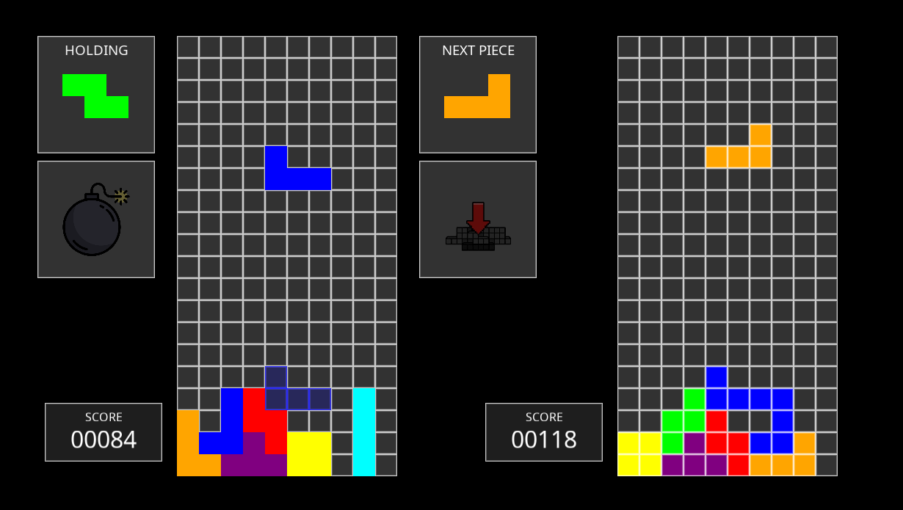
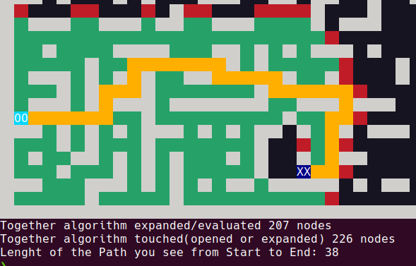
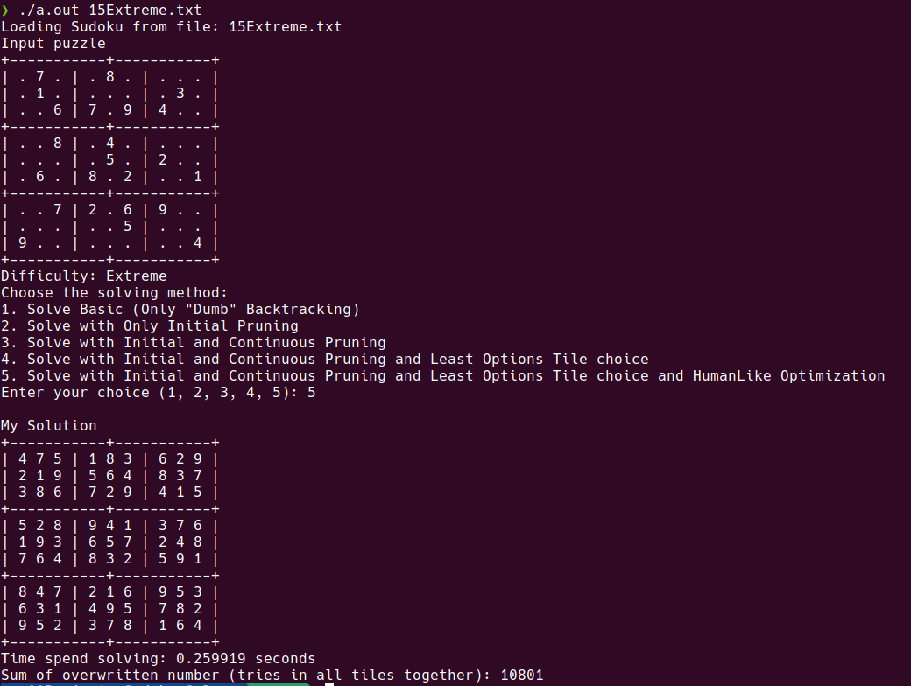

Akrmat
Team-developed application for generating accreditation
materials at the Faculty of Information Technology, designed to simplify the
accreditation process by leveraging data from external application APIs and using LaTeX for efficient PDF document generation.
Akrmat is a team project developed at the Faculty of Information Technology.
The application’s goal is to streamline the process of generating accreditation materials, such as study plans and programs,
using LaTeX to produce professional PDF documents for academic purposes.
My main contribution was the development of a standalone microservice
that compiles LaTeX code into PDFs. This service integrates with the Akrmat system,
receiving LaTeX code via an API, processing it, and returning the generated PDF.
I was also responsible for modifyng, expanding, debugging and troubleshooting the LaTeX generation, ensuring that the documents met the required standards.
LaTeX was completely new to me, and working with it presented a valuable challenge.
The LaTeX code in Akrmat is generated dynamically, taking inputs from various sources within the system to generate accurate accreditation documents.
By separating PDF generation into a standalone service, we ensured a clean, modular architecture that allows for easy maintenance and expansion.
This project was a great opportunity to work with external APIs and gain experience in LaTeX-based document generation,
while also improving my teamwork and problem-solving skills.
Please note that this project is a private, internal application
used at the Faculty of Information Technology, and as such, I am unable to provide the source code or full details.
However, if you are interested in learning more about this specific project, feel free to contact me, and I will be happy to provide further information.
|
Web Automation
Professional automation platform developed for Atos, featuring advanced web scraping,
real-time data synchronization, and a robust data persistence layer.
- Playwright
- React & WebSockets
- Alembic
During this professional engagement at Atos, I was responsible for the complete architectural overhaul of a
web automation system. This included a large-scale refactoring of the codebase from a functional
approach to a strict Object-Oriented Programming (OOP) model, significantly improving maintainability
and scalability.
The technical core utilizes Python with Playwright for high-performance web scraping and data extraction.
To ensure reliable data persistence, I implemented an automated management system using Alembic
for database migrations and custom scripts for periodic database cleaning, ensuring the system
remains optimized by removing legacy data.
On the frontend, I developed and refactored components in React, integrating WebSockets to provide
users with dynamic, real-time data updates without page refreshes. I also managed and updated
REST APIs to ensure seamless communication between the scraping engine and the user interface.
Beyond development, I contributed to the UI/UX design, creating an intuitive interface for monitoring
automated tasks. My role involved ensuring data persistence across the entire lifecycle of the
scraping process and maintaining the overall stability of the production environment.
Due to a Non-Disclosure Agreement (NDA), I cannot provide further technical documentation or source code for this project.
|
ASCII Art App
A modular Scala application that converts different image formats into ASCII art,
featuring customizable filters and clean command line interface. Designed with a strong focus on expandability
and object-oriented principles for maintainable, extensible architecture.
- Scala
- Object-Oriented Programming
- Modular Design
As a part of my studies I developed a modular, highly scalable Scala application designed with an emphasis on clean architecture and extensibility.
The system's design leverages object-oriented principles to create a flexible and maintainable codebase that easily accommodates future enhancements and new features.
The smooth flow of the application is largely driven by its modular structure, which enables seamless integration of different
image formats and conversion methods without disrupting the overall system. The design facilitates the easy
addition of new filters and features, ensuring the app can evolve alongside user needs.
A robust and flexible command-handling system was integrated to decouple logic from user interaction, enhancing both
maintainability and user experience. The application’s architecture prioritizes reusability and simplicity, ensuring
that every component is independent and reusable in other projects or use cases.
This design-centric approach ensures the system remains easy to scale, modify, and maintain, laying a solid
foundation for long-term use while promoting efficient development practices.

Here’s an example of the app in action. You can clone the repository and explore the full functionality for yourself.
Check out the project on GitHub:
AsciiArtApp
|
Advanced Tetris
A high-performance Python implementation of Tetris featuring LAN multiplayer
and a modular ability system. The project focuses on clean architecture,
asynchronous networking, and software quality standards.
- Design Patterns
- LAN Multiplayer
- Pytest & Pylint
This project is an advanced Tetris application developed using Python and the Pyglet
library for high-performance graphics rendering and input handling. The primary goal
was to go beyond basic gameplay by creating a robust, extensible engine built on
Object-Oriented Programming (OOP) principles, ensuring a strict separation between
game logic, networking, and the user interface.
The standout feature is the LAN multiplayer mode, allowing players to compete in
real-time via socket communication. To enhance gameplay depth, I implemented a
"Modular Ability System." This architecture allows for the seamless integration of
unique player abilities and offensive modifiers (attacks) without altering the
core engine, utilizing design patterns to maintain scalability.

Above is a preview of the game in action, showcasing the multiplayer interface and the active ability system.
The clean UI is rendered efficiently using Pyglet's batch drawing capabilities.
Code quality and stability were central to the development process. The project
incorporates a comprehensive suite of unit tests using the Pytest framework,
covering critical components like line-clearance logic and network packet
synchronization. To ensure maintainability and professional standards, the
entire codebase adheres to a strict codestyle enforced by Pylint.
The system's modularity ensures that components such as the network handler,
game state manager, and UI renderer are decoupled. This structure not only
facilitates easier debugging but also allows for future expansions, such as
new game modes or alternative rendering backends.
If you want to try out the gameplay you can download the prepared exe file for windows here:
If you're interested in exploring the technical architecture, the implementation
of the ability system, or the networking protocols or you just want to play the game,
feel free to check out
the full source code and documentation.
View the project on GitHub
|
Car Rent Portal
A Spring Boot Java application with REST API, ORM, and Azure database integration.
Built during the 3rd semester, featuring full CRUD operations and custom frontend implementation.
Designed with a 3-layer architecture, ensuring a clear separation of concerns.
- Java
- Spring Boot
- Rest API
This project is a robust, three-layer Java application built using Spring Boot, designed to handle
car rental operations with integration to an Azure database. The application
implements a clean, modular architecture with a clear separation of concerns, adhering to the principles of maintainability and scalability.
The backend is powered by Spring Boot, utilizing REST APIs to enable communication with the frontend.
The application is fully connected to an Azure database, with complex SQL queries executed through Spring Data JPA annotations.
Integrity constraints are enforced to ensure the consistency of the database, contributing to the overall reliability of the application.
The frontend, developed as a separate application, communicates with the backend via RESTful services, providing
users with a dynamic and responsive interface. Both frontend and backend are designed to work together, offering a smooth user experience.
The application also leverages Gradle as the build automation tool, ensuring a streamlined development process.
A fully configured Dockerfiles are included for both backend and frontend, making it easy to deploy and run the application in any environment.
For testing, the project incorporates Mockito to mock dependencies and ensure the reliability of individual components.
Additionally, the project utilizes Swagger UI for automatic API documentation generation, providing developers with an up-to-date,
interactive interface for testing and understanding the API endpoints.
If you're interested in exploring the project further, you can view both the frontend and backend code on GitHub.
Feel free to check out the repositories for more details and insights:
Backend GitHub Repository
Frontend GitHub Repository
|
Collaborative Filtering System
This project implements a movie recommendation system using collaborative filtering algorithms.
The system is built with Python and Flask on the backend and features a dynamic user interface developed in React.
This project implements a collaborative filtering–based recommendation system for suggesting movies to users based on their rating behavior.
It uses Python for backend logic, React for the frontend interface, and SQLite for data persistence.
The system is designed to work with real-world data and simulate personalized recommendation workflows.
-
Similarity Functions: The engine supports multiple similarity metrics including cosine similarity, Pearson correlation, and Spearman rank correlation,
allowing for flexible user similarity evaluations.
-
Personalized Recommendations: Based on a selected similarity metric, the system identifies similar users, predicts ratings for unseen movies,
and returns top recommendations.
-
REST API: A Flask-based API enables dynamic recalculation of recommendations using parameters such as similarity function, neighbor count,
number of suggested movies, or weighting factor (kappa). Results are returned in JSON format.
-
Frontend & Testing: The frontend interface, built with React and powered via npm, allows real-time interaction and testing.
The project also includes a test suite to validate functionality under various configurations.
The full source code is available on GitHub:
Colaborative Filtering App
|
Advanced SQL
Collection of assignments focusing on PLSQL
and PgPLSQL, covering packages, procedures, triggers, recursion,
and execution plan optimization. Main emphasis is on PostgreSQL, but the
collection also includes sections that explore Oracle-specific implementations.
This collection of assignments delves into advanced SQL concepts and practices,
focusing on PLSQL and PgPLSQL. It encompasses a range of topics, including the
creation and management of triggers, the use of I/O packages for data processing,
execution plan optimization, and the implementation of SQL recursion for complex data queries.
While the primary emphasis is on PostgreSQL, the assignments also include sections exploring Oracle-specific features,
providing a well-rounded perspective on database programming. Each task is designed to enhance practical skills and a deep
understanding of advanced SQL functionalities.
If you'd like to explore the full set of assignments, including detailed implementations and examples,
feel free to visit my GitHub repository.
There, you’ll find all the materials and source code.
GitHub repository
|
AI Projects
A collection of classical AI problem solvers implemented in C++. Projects include search-based labyrinth solving with visualization,
solving N-Queens and Sudoku puzzles using constraint-based reasoning and heuristics, and a PDDL-based planner moving agents.
- Search Algorithms
- Constraint Satisfaction
- C++
This set of projects demonstrates foundational artificial intelligence techniques through a series of classic problem-solving tasks.
Each problem was solved using appropriate AI algorithms, including both uninformed and informed search, constraint satisfaction,
and automated planning approaches.
The Labyrinth Solver uses algorithms like BFS, DFS, Random Search, Greedy Search, and A* to find paths through mazes.
A visualizer component animates the search step by step, allowing for direct comparison of algorithm behavior and efficiency.
Example:

The N-Queens Solver explores backtracking and heuristics to place N queens on a chessboard such that no two threaten each other.
Visual outputs clearly display successful placements and solution progress.
The Sudoku Solver uses a combination of backtracking and constraint propagation with MRV heuristics
to efficiently solve even highly complex puzzles with minimal initial clues. It supports domain filtering to reduce search space
and includes a terminal-based output. If no puzzle is provided, the solver automatically fetches a random Sudoku puzzle from a public API.
Example:

The PDDL Planning project solves the Multi-Agent Path Finding (MAPF) problem on an undirected graph.
Agents must reach their goals without collisions, and the task is encoded in PDDL. An external planner computes valid, often optimal, solutions.
These projects highlight key AI problem-solving paradigms in a hands-on way and can be used for both teaching and demonstration purposes.
View the project
|
Conceptual Modeling
Project modeling the auto repair service domain using OntoUML,
UML, BPMN, and OCD diagrams. OntoUML captures core entities and the relationships between them,
while BPMN maps concrete processes. The OCD showcases the system's workflow.
This project is centered around modeling the car repair service domain using various
modeling languages, including OntoUML, UML, BPMN, and DEMO. The main goal was to design a comprehensive
model of the domain, starting with the creation of an OntoUML diagram that identifies the
core entities involved in the auto repair service and defines the relationships between them.
The OntoUML model captures both the conceptual and structural aspects of the domain, providing a solid foundation for further analysis.
integrity constraints were defined using OCL (Object Constraint Language) to
ensure the model’s consistency and correctness. The system automatically
checked for potential antipatterns within the OntoUML model.
In addition to modeling the overall workflow, individual transactions were also modeled
within the system using DEMO (Design & Engineering Methodology for Organizations).
DEMO was used to capture the specific actions and interactions that occur in the system’s transactional processes,
ensuring that these processes align with the defined business rules and organizational structure.
Finally, an OCD (Organization Conceptual Diagram) was created to represent the structure
of the organization itself, outlining the roles, responsibilities, and relationships
between different organizational entities. This diagram provided a clear and comprehensive view of the organizational hierarchy.
If you're interested in exploring the full details of the project, including all diagrams and models, feel free to check out the complete work.
View the project
|
Excel Engine
This project implements an engine for a spreadsheet processor that
simulates the behavior of a table (e.g., in Excel or Google Sheets) using an object-oriented approach in C++.
The key element of the solution is the use of inheritance and polymorphism.
- C++
- Polymorphism
- Inheritance
This project implements a powerful engine for a spreadsheet processor that simulates the behavior of a
table similar to tools like Excel or Google Sheets. Built using C++, the application focuses on accurately processing cells,
formulas, and detecting cyclic dependencies between them. It is designed with an object-oriented approach, utilizing inheritance
and polymorphism to model a variety of cell types and operations that can be performed on them.
The core functionality revolves around:
-
Cell Handling: Each cell in the spreadsheet can contain different types of data,
including static values (such as numbers or text) or dynamic content (formulas that reference other cells).
-
Formula Evaluation: The processor can parse and compute formulas using a sophisticated Abstract Syntax Tree (AST)
stored in each cell. This allows for more efficient and accurate evaluations of formula results.
-
Cyclic Dependency Detection: One of the key features of the engine is its ability to detect
and manage cyclic dependencies between cells. This ensures that the processor does not enter an
infinite loop when a formula relies on the value of a cell that in turn depends on the original cell.
-
External Parser Integration: The engine integrates an external parser for formula input,
ensuring a smooth and flexible way of reading and processing user-defined formulas.
Unfortunately, I am unable to provide a public link to the project, as it is part of my academic work.
This restriction is in place to prevent any potential misuse or plagiarism, ensuring the integrity of the project and its originality.
However, if you are interested, feel free to contact me, and I can provide access to the project upon request.
|
Operating Systems Projects
Assignments focusing on core OS concepts such as multithreading synchronization and file system design.
Main emphasis on implementations of classical problems like producer-consumer,
and the creation of a custom file system inspired by the FAT architecture.
- Multithreading
- File System
- C++
This collection covers advanced operating systems topics through hands-on projects in C++.
The first project tackled multithreading synchronization, implementing a classical producer-consumer problem.
The solution required careful management of threads and synchronization primitives to ensure safe and efficient data exchange,
demonstrating solid understanding of concurrency control.
The second project involved designing and implementing a simplified custom file system modeled similarly to the FAT architecture.
This task required creating a working interface for file management, including allocation tables and file metadata handling,
showcasing practical skills in low-level systems programming and file system internals.
Working on these projects helped me develop stronger problem-solving skills and a deeper understanding of essential OS concepts.
Through practical application of C++ coding techniques, I gained valuable experience that I hope will be useful in future system-level development.
For more details and to explore the source code, you can visit my;
GitHub repository.
|